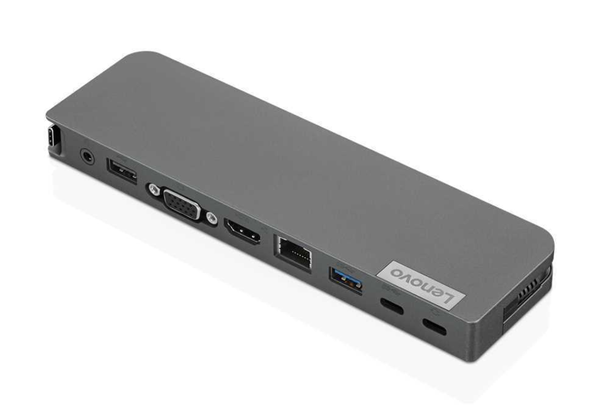

Dock Stations
Bem, você sabe o que é um Dock Station? Então, fique aqui para saberes acerca disto, e tenho quase quase a certeza de que vai te imperssionar!

Dock stations são acessórios para notebooks que podem transformar a experiência de uso do laptop em algo mais próximo de um desktop tradicional. O acessório permite expandir a conectividade do computador, adicionando portas USB extras, leitor de cartões de memória ou até mesmo entradas para ligar uma placa de vídeo externa. A seguir, o TechTudo lista cinco motivos para considerar ter um dock, suas vantagens, os tipos de modelos disponíveis no mercado e em que situações o acessório é recomendado.
A razão para se investir em um dock de qualquer tipo está em expandir a conectividade do laptop. Com o acessório, é possível adicionar mais portas USB, leitor de cartões de memória e conexão via cabo de rede em modelos de notebooks que não contam com essas opções, por exemplo.
A solução garante maior versatilidade para o laptop e pode deixá-lo mais próximo de um desktop convencional, garantindo maior produtividade no uso do computador – que segue sendo portátil. Além disso, o uso desses acessórios tem se tornado mais popular nos últimos anos com a tendência observada em notebooks mais recentes, que chegam com cada vez menos portas e interfaces.
Um outro atrativo do uso de docks está na possibilidade de organizar melhor o espaço de trabalho. Como você pode deixar tudo ligado no acessório – e não no notebook – é possível fixar cabos e deixa-los ocultos. Além disso, é possível instalar HDs externos e outros tipos de dispositivos de forma "permanente" na mesa ou estação de trabalho, já que eles ficam o tempo todo ligados no dock.
Essa característica pode ser ainda mais importante para quem pretende montar um escritório ou espaço de trabalho dentro de casa, com móveis planejados que levem em consideração pontos para instalação de cada periférico.
Dock para notebook é um termo bastante abrangente que acaba englobando uma variedade grande de dispositivos diferentes, mas que resolvem um mesmo problema.
Os mais simples são os denominados como “port replicator”, e que consiste em docks que trazem portas e interfaces adicionais, bastante populares entre usuários de notebooks como os MacBooks, da Apple, ou o XPS 13, da Dell. Replicators não interferem na performance do computador, são compactos e fáceis de transportar.
Já docks do tipo Breakout podem ser também bastante compactos e se posicionam como opções para quem precisa ter acesso a alguma interface originalmente indisponível no notebook, como porta Ethernet ou leitor de cartões de memórias em laptops ultrafinos sem esses recursos.
Converter Dock, por sua vez, são alternativas mais especializadas e, ao contrário das opções anteriores, atuam de forma mais direta no perfil do sistema, permitindo a adição de componentes como placa de vídeo dedicada e hardware. Dessa forma, o acessório melhora o desempenho do notebook, mas não são tão portáteis.
Já docks do tipo Computer Stand são orientadas primeiro para a ergonomia. Com esse tipo de acessório, é possível ter uma base de instalação para adequar o notebook a uma posição confortável. Em alguns casos podem contar até mesmo com ventoinha para auxiliar na refrigeração do sistema, assim como oferecer algum suprimento de portas USB.
Um dock pode facilitar a tarefa de manter sua área de trabalho mais organizada, facilitando o uso no dia a dia. Suponha que você usa o notebook para trabalhar e conecta uma grande quantidade de acessórios ao computador todas as vezes. Como o laptop tem poucas portas, é necessário conectar e desconectar os periféricos com certa frequência.
Além disso, dependendo do tipo de equipamento que você usa, a tendência é de um emaranhado desorganizado de cabos e fios por todos os lados. Com um dock, é possível deixar tudo permanentemente ligado ao acessório e apenas remover o notebook quando precisar leva-lo consigo. Ao contrário de ter que levar vários cabos USB, HDMI, e outros, por exemplo, você passa a conectar e desconectar apenas uma porta USB (ou Thunderbolt) do dock, quando necesário.
Docks mais simples e baratos são um tipo de acessório cada vez mais relevante para usuários de notebooks econômicos em matéria de interfaces. Os MacBooks são um bom exemplo: na melhor das hipóteses, o consumidor tem acesso a quatro portas USB-C com Thunderbolt 3.
Para quem precisa, por exemplo, de internet via cabo ou transferir arquivos a partir de um cartão de memória, esse pode ser um grande problema. Afinal, o usuário que usa esse tipo de conexão depende de uma infinidade de dongles e adaptadores. Tudo isso pode ser resolvido com um dock USB-C (ou Thunderbolt 3, para quem deseja maior performance e tem notebook compatível).
© 2024 PAULINFORMATION. Todos os direitos reservados.